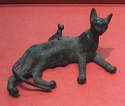

История появления котиков
.jpg) Многие утверждают, что первыми кошек приручили и одомашнили древние египтяне, однако общего мнения на этот счет нет. Считается, что история появления кошек рядом с человеком начинается примерно 10-12 тысяч лет назад и связана с тем, что эти животные сблизились с людьми именно с тех пор, когда последние начали вести оседлый образ жизни. Это, кстати, делает кошек просто уникальными среди всех зверей, многие из которых до сих пор стараются держаться от людей подальше.
Многие утверждают, что первыми кошек приручили и одомашнили древние египтяне, однако общего мнения на этот счет нет. Считается, что история появления кошек рядом с человеком начинается примерно 10-12 тысяч лет назад и связана с тем, что эти животные сблизились с людьми именно с тех пор, когда последние начали вести оседлый образ жизни. Это, кстати, делает кошек просто уникальными среди всех зверей, многие из которых до сих пор стараются держаться от людей подальше.
Много споров вызывает также история происхождения кошек, которая тоже весьма неоднозначна. Самое распространенное мнение, которое, кстати, особенно прижилось в России, заключается в том, что единым предком современных кошек является переднеазиатская североафриканская степная кошка, которая была одомашнена вовсе не в Египте, а в Нубии, и произошло это около 4 тысяч лет назад. Только после этого кошки попали в Египет, а затем появились и в Азии, где успешно скрестились с лесными бенгальскими видами.

История котиков в Египте
История Египта очень тесно связана с кошками, ведь считается, что именно египтяне первыми одомашнили этих животных, а их значение в жизни страны было просто огромным. К тому же, некоторые исследователи считают, что домашняя кошка вообще впервые появилась именно в Древнем Египте - в результате скрещивания камышового кота и евро-африканских диких кошек.
В целом, история египетских кошек начинается еще во втором тысячелетии до нашей эры: именно этим временем датируется древнейшее изображение домашних кошек, которое было найдено. Причина же, по которой эти уникальные животные заняли такое важное место в истории Египта, проста: это государство испокон веков было аграрным, и именно кошки могли спасти его урожаи от грызунов.
Впрочем, кошки в истории Египта были не только "надзирателями" за зерном, но и охотниками: их специально дрессировали для того, чтобы они могли охотиться на пернатую дичь, а кроме того, эти животные успешно охотились на мелких грызунов, кротов, а иногда даже зайцев.
.jpg)
История котиков в Великобритании
Великобритания – одна из немногих стран, которым посчастливилось увидеть самых древних кошек, которым поклонялся еще Древний Египет. Считается, что первых домашних кошек на остров привезли римляне, и это доказывают скелеты этих животных, найденные в руинах их домов. С первого же дня появления таких котов в Британии, они начали пользоваться просто небывалой любовью англичан, поэтому можно утверждать, что история кошек в Великобритании началась с огромного успеха.
В частности, было установлено, что домашняя кошка в Англии обязательно должна была продаваться, причем за хорошую цену, которая регулярно росла. В 948 году был даже придуман специальный закон, согласно которому новорожденный котенок оценивался в один пенни, а после того, как он ловил хотя бы одну мышку, его цена возрастала до двух пенсов, и это была достаточно крупная сумма по тем временам.
.jpg)
История котиков в России
Лапы первой домашней кошки ступили на русскую землю в 11 веке, а на землях, ныне относящихся к югу Украины, они и вовсе появились в 7-8 столетиях, о чем свидетельствуют найденные кошачьи останки. Впрочем, судя по некоторым данным, на землях, относящихся ныне к Одесской и Черкасской областям Украины, первые кошки появились уже даже во 2-5 веках, хотя в те времена они были большой редкостью.
Как бы то ни было, известно, что животное на Русь привезли мореплаватели, и успех странного пушистого зверя был просто ошеломительным! В ходу сразу же появилась пословица «Без кошек нет избы», а безопасность и жизнь животных было решено защитить на уровне законодательства. Для этих целей придумали закон, который, в частности, предусматривал солидный штраф за кражу кошки. Удивительно, но его сумма была даже больше, чем размер штрафа, положенного за кражу коровы или угон вола.
История котиков на Востоке
Известно, что домашняя кошка произошла из Египта, однако по некоторым теориям, туда это животное попало с Востока, где были найдены древнейшие останки кошек. В частности, такие останки (датированные 5-6 тысячелетиями до нашей эры) были обнаружены и в самом древнем городе Земли Иерихоне, и в Иордании, и в Индии. И хотя ученые утверждают, что найденные животные вряд ли могут считаться домашними в полной мере, факт остается фактом: на Древнем Востоке кошки были достаточно распространены. Причем в буддистские храмы они попали еще задолго до нашей эры, и считается, что их предком была какая-то мелкая кошка, распространенная в Юго-Восточной Азии.
Более поздние свидетельства доказывают также, что и на Ближнем, и на Дальнем Востоке кошки находились в привилегированном положении. В частности, "официальная" история кошек на Востоке может начинаться с ислама, в котором эти животные почитаются и по сей день. Есть даже легенда о кошке по кличке Муэзза, которая якобы была любимицей самого пророка Мухаммеда. Пророк так ее любил, что однажды был вынужден отрезать рукав своей одежды, чтобы встать, не потревожив ее сон.
.jpg)
История котиков в Японии и Китае
История Японии и Китая совершенно неотделима от образа кошки, несмотря на то, что это животное поселилось в обеих странах относительно недавно. В частности, в Японию кошки попали из Китая, откуда были завезены достаточно поздно - лишь в 6-7 столетиях нашей эры, и состоялось это благодаря китайским морякам: они перевозили японцам манускрипты, а кошек взяли с собой, чтобы они защищали ценные бумаги от корабельных крыс.
В Китай же кошки попали напрямую из Древнего Египта, причем поселились они в этой стране намного раньше, чем в Европе. В итоге, история кошек в Китае началась примерно в 6 веке до нашей эры, когда их короткошерстные разновидности уже активно разводились в этой стране. А вот длинношерстных кошек в Китае начали разводить значительно позднее.
Всемирный день котиков!!!
День всех котов: 1 марта!
Любовь к кошкам во всем мире оказалась настолько велика, что их владельцы просто не могли обойтись без специального праздника для своих любимцев. В итоге каждый год 1 марта в очень многих странах мира отмечается Всемирный день кошек, который объединяет миллионы владельцев этих животных по всему миру. Традиция празднования этого дня возникла стихийно, и хотя до сих пор Всемирный праздник кошек нигде официально не утвержден, это не мешает любителям этих животных чествовать своих питомцев.
Популярность праздника объясняется прежде всего тем, что кошки испокон веков были и остаются самыми популярными домашними животными во всем мире: около 80% всех жителей Земли держат домашнее животное, и более половины из них отдали свое предпочтение именно кошкам.
Чествовать этих животных 1 марта с удовольствием соглашается каждый владелец, и в итоге Всемирный день кошек был объявлен праздником благодарности этим уникальным животным, которые в этот день находятся в особом почете.